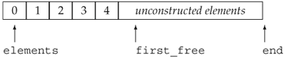
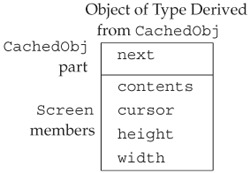
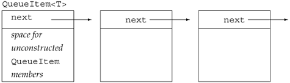

18.1. Optimizing Memory AllocationMemory allocation in C++ is a typed operation: new (Section 5.11, p. 174) allocates memory for a specified type and constructs an object of that type in the newly allocated memory. A new expression automatically runs the appropriate constructor to initialize each dynamically allocated object of class type. The fact that new allocates memory on a per-object basis can impose unacceptable run-time overhead on some classes. Such classes might need to make user-level allocation of objects of the class type faster. A common strategy such classes use is to preallocate memory to be used when new objects are created, constructing each new object in preallocated memory as needed. Other classes want to minimize allocations needed for their own data members. For example, the library vector class preallocates (Section 9.4, p. 330) extra memory to hold additional elements if and when they are added. New elements are added in this reserved capacity. Preallocating elements allows vector to efficiently add elements while keeping the elements in contiguous memory. In each of these casespreallocating memory to hold user-level objects or to hold the internal data for a classthere is the need to decouple memory allocation from object construction. The obvious reason to decouple allocation and construction is that constructing objects in preallocated memory is wasteful. Objects may be created that are never used. Those objects that are used must be reassigned new values when the preallocated object is actually used. More subtly, some classes could not use preallocated memory if it had to be constructed. As an example, consider vector, which uses a preallocation strategy. If objects in preallocated memory had to be constructed, then it would not be possible to have vectors of types that do not have a default constructorthere would be no way for vector to know how to construct these objects.
18.1.1. Memory Allocation in C++In C++ memory allocation and object construction are closely intertwined, as are object destruction and memory deallocation. When we use a new expression, memory is allocated, and an object is constructed in that memory. When we use a delete expression, a destructor is called to destroy the object and the memory used by the object is returned to the system. When we take over memory allocation, we must deal with both these tasks. When we allocate raw memory, we must construct object(s) in that memory. Before freeing that memory, we must ensure that the objects are properly destroyed.
C++ provides two ways to allocate and free unconstructed, raw memory:
C++ also provides various ways to construct and destroy objects in raw memory:
18.1.2. The allocator ClassThe allocator class is a template that provides typed memory allocation and object construction and destruction. Table 18.1 on the following page outlines the operations that allocator supports.
The allocator class separates allocation and object construction. When an allocator object allocates memory, it allocates space that is appropriately sized and aligned to hold objects of the given type. However, the memory it allocates is unconstructed. Users of allocator must separately construct and destroy objects placed in the memory it allocates. Using allocator to Manage Class Member DataTo understand how we might use a preallocation strategy and the allocator class to manage the internal data needs of a class, let's think a bit more about how memory allocation in the vector class might work. Recall that the vector class stores its elements in contiguous storage. To obtain acceptable performance, vector preallocates more elements than are needed (Section 9.4, p. 330). Each vector member that adds elements to the container checks whether there is space available for another element. If so, then the member initializes an object in the next available spot in preallocated memory. If there isn't a free element, then the vector is reallocated: The vector obtains new space, copies the existing elements into that space, adds the new element, and frees the old space. The storage that vector uses starts out as unconstructed memory; it does not yet hold any objects. When the elements are copied to or added in this preallocated space, they must be constructed using the construct member of allocator. To illustrate these concepts we'll implement a small portion of vector. We'll name our class Vector to distinguish it from the standard vector class:
// pseudo-implementation of memory allocation strategy for a vector-like class
template <class T> class Vector {
public:
Vector(): elements(0), first_free(0), end(0) { }
void push_back(const T&);
// ...
private:
static std::allocator<T> alloc; // object to get raw memory
void reallocate(); // get more space and copy existing elements
T* elements; // pointer to first element in the array
T* first_free; // pointer to first free element in the array
T* end; // pointer to one past the end of the array
// ...
};
Each Vector<T> type defines a static data member of type allocator<T> to allocate and construct the elements in Vectors of the given type. Each Vector object keeps its elements in a built-in array of the indicated type and maintains three pointers into that array:
Figure 18.1 illustrates the meaning of these pointers. Figure 18.1. Vector Memory Allocation Strategy We can use these pointers to determine the size and capacity of the Vector:
Using constructThe push_back member uses these pointers to add a new element to the end of the Vector:
template <class T>
void Vector<T>::push_back(const T& t)
{
// are we out of space?
if (first_free == end)
reallocate(); // gets more space and copies existing elements to it
alloc.construct(first_free, t);
++first_free;
}
The push_back function starts by determining whether there is space available. If not, it calls reallocate. That member allocates new space and copies the existing elements. It resets the pointers to point to the newly allocated space. Once push_back knows that there is room for the new element, it asks the allocator object to construct a new last element. The construct function uses the copy constructor for type T to copy the value t into the element denoted by first_free. It then increments first_free to indicate that one more element is in use. Reallocating and Copying ElementsThe reallocate function has the most work to do:
template <class T> void Vector<T>::reallocate()
{
// compute size of current array and allocate space for twice as many elements
std::ptrdiff_t size = first_free - elements;
std::ptrdiff_t newcapacity = 2 * max(size, 1);
// allocate space to hold newcapacity number of elements of type T
T* newelements = alloc.allocate(newcapacity);
// construct copies of the existing elements in the new space
uninitialized_copy(elements, first_free, newelements);
// destroy the old elements in reverse order
for (T *p = first_free; p != elements; /* empty */ )
alloc.destroy(--p);
// deallocate cannot be called on a 0 pointer
if (elements)
// return the memory that held the elements
alloc.deallocate(elements, end - elements);
// make our data structure point to the new elements
elements = newelements;
first_free = elements + size;
end = elements + newcapacity;
}
We use a simple but surprisingly effective strategy of allocating twice as much memory each time we reallocate. The function starts by calculating the current number of elements in use, doubling that number, and asking the allocator object to obtain the desired amount of space. If the Vector is empty, we allocate two elements. If Vector holds ints, the call to allocate allocates space for newcapacity number of ints. If it holds strings, then it allocates that space for the given number of strings. The call to uninitialized_copy uses a specialized version of the standard copy algorithm. This version expects its destination to be raw, unconstructed memory. Rather than assigning elements from the input range to the destination, it copy-constructs each element in the destination. The copy constructor for T is used to copy each element from the input range to the destination. The for loop calls the allocator member destroy on each object in the old array. It destroys the elements in reverse order, starting with the last element in the array and finishing with the first. The destroy function runs the destructor for type T to free any resources used by the old elements. Once the elements have been copied and destroyed, we free the space used by the original array. We must check that elements actually pointed to an array before calling deallocate.
Finally, we have to reset the pointers to address the newly allocated and initialized array. The first_free and end pointers are set to denote one past the last constructed element and one past the end of the allocated space, respectively.
18.1.3. operator new and operator delete FunctionsThe previous subsection used the vector class to show how we could use the allocator class to manage a pool of memory for a class' internal data storage. In the next three subsections we'll look at how we might implement the same strategy using the more primitive library facilities. First, we need to understand a bit more about how new and delete expressions work. When we use a new expression
// new expression
string * sp = new string("initialized");
three steps actually take place. First, the expression calls a library function named operator new to allocate raw, untyped memory large enough to hold an object of the specified type. Next, a constructor for the type is run to construct the object from the specified initializers. Finally, a pointer to the newly allocated and constructed object is returned. When we use a delete expression to delete a dynamically allocated object:
delete sp;
two steps happen. First, the appropriate destructor is run on the object to which sp points. Then, the memory used by the object is freed by calling a library function named operator delete. The operator new and operator delete InterfaceThere are two overloaded versions of operator new and operator delete functions. Each version supports the related new and delete expression:
void *operator new(size_t); // allocate an object
void *operator new[](size_t); // allocate an array
void *operator delete(void*); // free an object
void *operator delete[](void*); // free an array
Using the Allocation Operator FunctionsAlthough the operator new and operator delete functions are intended to be used by new expressions, they are generally available functions in the library. We can use them to obtain unconstructed memory. They are somewhat analogous to the allocate and deallocate members of the allocator class. For example, instead of using an allocator, we could have used the operator new and operator delete functions in our Vector class. When we allocated new space we wrote
// allocate space to hold newcapacity number of elements of type T
T* newelements = alloc.allocate(newcapacity);
which could be rewritten as
// allocate unconstructed memory to hold newcapacity elements of type T
T* newelements = static_cast<T*>
(operator new[](newcapacity * sizeof(T)));
Similarly, when we deallocated the old space pointed to be the Vector member elements we wrote
// return the memory that held the elements
alloc.deallocate(elements, end - elements);
which could be rewritten as
// deallocate the memory that they occupied
operator delete[](elements);
These functions behave similarly to the allocate and deallocate members of the allocator class. However, they differ in one important respect: They operate on void* pointers rather than typed pointers.
The allocate member allocates typed memory, so programs that use it can avoid the necessity of calculating the byte-count amount of memory needed. They also can avoid casting (Section 5.12.4, p. 183) the return from operator new. Similarly, deallocate frees memory of a specific type, again avoiding the necessity for converting to void*. 18.1.4. Placement new ExpressionsThe library functions operator new and operator delete are lower-level versions of the allocator members allocate and deallocate. Each allocates but does not initialize memory. There are also lower-level alternatives to the allocator members construct and destroy. These members initialize and destroy objects in space allocated by an allocator object. Analogous to the construct member, there is a third kind of new expression, referred to as placement new. The placement new expression initializes an object in raw memory that was already allocated. It differs from other versions of new in that it does not allocate memory. Instead, it takes a pointer to allocated but unconstructed memory and initializes an object in that memory. In effect, placement new allows us to construct an object at a specific, preallocated memory address. The form of a placement new expression is:
new (place_address) type
new (place_address) type (initializer-list)
where place_address must be a pointer and the initializer-list provides (a possibly empty) list of initializers to use when constructing the newly allocated object. We could use a placement new expression to replace the call to construct in our Vector implementation. The original code
// construct a copy t in the element to which first_free points
alloc.construct (first_free, t);
would be replaced by the equivalent placement new expression
// copy t into element addressed by first_free
new (first_free) T(t);
Placement new expressions are more flexible than the construct member of class allocator. When placement new initializes an object, it can use any constructor, and builds the object directly. The construct function always uses the copy constructor. For example, we could initialize an allocated but unconstructed string from a pair of iterators in either of these two ways:
allocator<string> alloc;
string *sp = alloc.allocate(2); // allocate space to hold 2 strings
// two ways to construct a string from a pair of iterators
new (sp) string(b, e); // construct directly in place
alloc.construct(sp + 1, string(b, e)); // build and copy a temporary
The placement new expression uses the string constructor that takes a pair of iterators to construct the string directly in the space to which sp points. When we call construct, we must first construct the string from the iterators to get a string object to pass to construct. That function then uses the string copy constructor to copy that unnamed, temporary string into the object to which sp points. Often the difference is irrelevant: For valuelike classes, there is no observable difference between constructing the object directly in place and constructing a temporary and copying it. And the performance difference is rarely meaningful. But for some classes, using the copy constructor is either impossible (because the copy constructor is private) or should be avoided. In these cases, use of placement new may be necessary. 18.1.5. Explicit Destructor InvocationJust as placement new is a lower-level alternative to using the allocate member of the allocator class, we can use an explicit call to a destructor as the lower-level alternative to calling destroy.
In the version of Vector that used an allocator, we clean up each element by calling destroy:
// destroy the old elements in reverse order
for (T *p = first_free; p != elements; /* empty */ )
alloc.destroy(--p);
For programs that use a placement new expression to construct the object, we call the destructor explicitly:
for (T *p = first_free; p != elements; /* empty */ )
p->~T(); // call the destructor
Here we invoke a destructor directly. The arrow operator dereferences the iterator p to obtain the object to which p points. We then call the destructor, which is the name of the type preceded by a tilde (~). The effect of calling the destructor explicitly is that the object itself is properly cleaned up. However, the memory in which the object resided is not freed. We can reuse the space if desired.
18.1.6. Class Specific new and deleteThe previous subsections looked at how a class can take over memory management for its own internal data structure. Another way to optimize memory allocation involves optimizing the behavior of new expressions. As an example, consider the Queue class from Chapter 16. That class doesn't hold its elements directly. Instead, it uses new expressions to allocate objects of type QueueItem. It might be possible to improve the performance of Queue by preallocating a block of raw memory to hold QueueItem objects. When a new QueueItem object is created, it could be constructed in this preallocated space. When QueueItem objects are freed, we'd put them back in the block of preallocated objects rather than actually returning memory to the system. The difference between this problem and our Vector implementation is that in this case, we want to optimize the behavior of new and delete expressions when applied to objects of a particular type. By default, new expressions allocate memory by calling the version of operator new that is defined by the library. A class may manage the memory used for objects of its type by defining its own members named operator new and operator delete. When the compiler sees a new or delete expression for a class type, it looks to see if the class has a member operator new or operator delete. If the class defines (or inherits) its own member new and delete functions, then those functions are used to allocate and free the memory for the object. Otherwise, the standard library versions of these functions are called. When we optimize the behavior of new and delete, we need only define new versions of the operator new and operator delete. The new and delete expressions themselves take care of constructing and destroying the objects. Member new and delete Functions
A class member operator new function must have a return type of void* and take a parameter of type size_t. The function's size_t parameter is initialized by the new expression with the size, in bytes, of the amount of memory to allocate. A class member operator delete function must have a void return type. It can be defined to take a single parameter of type void* or to take two parameters, a void* and a size_t. The void* parameter is initialized by the delete expression with the pointer that was deleted. That pointer might be a null pointer. If present, the size_t parameter is initialized automatically by the compiler with the size in bytes of the object addressed by the first parameter. The size_t parameter is unnecessary unless the class is part of an inheritance hierarchy. When we delete a pointer to a type in an inheritance hierarchy, the pointer might point to a base-class object or an object of a derived class. In general, the size of a derived-type object is larger than the size of a base-class object. If the base class has a virtual destructor (Section 15.4.4, p. 587), then the size passed to operator delete will vary depending on the dynamic type of the object to which the deleted pointer points. If the base class does not have a virtual destructor, then, as usual, the behavior of deleting a pointer to a derived object through a base-class pointer is undefined. These functions are implicitly static members (Section 12.6.1, p. 469). There is no need to declare them static explicitly, although it is legal to do so. The member new and delete functions must be static because they are used either before the object is constructed (operator new) or after it has been destroyed (operator delete). There are, therefore, no member data for these functions to manipulate. As with any other static member function, new and delete may access only static members of their class directly. Array Operator new[] and Operator delete[]We can also define member operator new[] and operator delete[] to manage arrays of the class type. If these operator functions exist, the compiler uses them in place of the global versions. A class member operator new[] must have a return type of void* and take a first parameter of type size_t. The operator's size_t parameter is initialized automatically with a value that represents the number of bytes required to store an array of the given number of elements of the specified type. The member operator delete[] must have a void return type and a first parameter of type void*. The operator's void* parameter is initialized automatically with a value that represents the beginning of the storage in which the array is stored. The operator delete[] for a class may also have two parameters instead of one, the second parameter being a size_t. If present, the additional parameter is initialized automatically by the compiler with the size in bytes of the storage required to store the array. Overriding Class-Specific Memory AllocationA user of a class that defines its own member new and delete can force a new or delete expression to use the global library functions through the use of the global scope resolution operator. If the user writes
Type *p = ::new Type; // uses global operator new
::delete p; // uses global operator delete
then new invokes the global operator new even if class Type defines its own class-specific operator new; similarly for delete.
18.1.7. A Memory-Allocator Base Class
Having seen how to declare class-specific member new and delete, we might next implement those members for QueueItem. Before doing so, we need to decide how we'll improve over the built-in library new and delete functions. One common strategy is to preallocate a block of raw memory to hold unconstructed objects. When new elements are created, they could be constructed in one of these preallocated objects. When elements are freed, we'd put them back in the block of preallocated objects rather than actually returning memory to the system. This kind of strategy is often known as maintaining a freelist. The freelist might be implemented as a linked list of objects that have been allocated but not constructed. Rather than implementing a freelist-based allocation strategy for QueueItem, we'll observe that QueueItem is not unique in wanting to optimize allocation of objects of its type. Many classes might have the same need. Because this behavior might be generally useful, we'll define a new class that we'll name CachedObj to handle the freelist. A class, such as QueueItem, that wants to opimize allocation of objects of its type could use the CachedObj class rather than implementing its own new and delete members directly. The CachedObj class will have a simple interface: Its only job is to allocate and manage a freelist of allocated but unconstructed objects. This class will define a member operator new that will return the next element from the freelist, removing it from the freelist. The operator new will allocate new raw memory whenever the freelist becomes empty. The class will also define operator delete to put an element back on the freelist when an object is destroyed. Classes that wish to use a freelist allocation strategy for their own types will inherit from CachedObj. Through inheritance, these classes can use the CachedObj definition of operator new and operator delete along with the data members needed to represent the freelist. Because the CachedObj class is intended as a base class, we'll give it a public virtual destructor.
The data members defined by the CachedObj class, and inherited by its derived classes, are:
The next pointer chains the elements together onto the freelist. Each type that we derive from CachedObj will contain its own type-specific data plus a single pointer inherited from the CachedObj base class. Each object has an extra pointer used by the memory allocator but not by the inherited type itself. When the object is in use, this pointer is meaningless and not used. When the object is available for use and is on the freelist, then the next pointer is used to point to the next available object. If we used CachedObj to optimize allocation of our Screen class, objects of type Screen (conceptually) would look like the illustration in Figure 18.2. Figure 18.2. Illustration of a CachedObj Derived Class The CachedObj ClassThe only remaining question is what types to use for the pointers in CachedObj. We'd like to use the freelist approach for any type, so the class will be a template. The pointers will point to an object of the template type:
/* memory allocation class: Pre-allocates objects and
* maintains a freelist of objects that are unused
* When an object is freed, it is put back on the freelist
* The memory is only returned when the program exits
*/
template <class T> class CachedObj {
public:
void *operator new(std::size_t);
void operator delete(void *, std::size_t);
virtual ~CachedObj() { }
protected:
T *next;
private:
static void add_to_freelist(T*);
static std::allocator<T> alloc_mem;
static T *freeStore;
static const std::size_t chunk;
};
The class is quite simple. It provides only three public members: operator new, operator delete, and a virtual destructor. The new and delete members take objects off and return objects to the freelist. The static members manage the freelist. These members are declared as static because there is only one freelist maintained for all the objects of a given type. The freeStore pointer points to the head of the freelist. The member named chunk specifies the number of objects that will be allocated each time the freelist is empty. Finally, add_to_freelist puts objects on the freelist. This function is used by operator new to put newly allocated objects onto the freelist. It is also used by operator delete to put an object back on the free list when an object is deleted. Using CachedObjThe only really tricky part in using CachedObj is understanding the template parameter: When we inherit from CachedObj, the template type we use to instantiate CachedObj will be the derived type itself. We inherit from CachedObj in order to reuse its freelist management. However, CachedObj holds a pointer to the object type it manages. The type of that pointer is pointer to a type derived from CachedObj. For example, to optimize memory management for our Screen class we would declare Screen as
class Screen: public CachedObj<Screen> {
// interface and implementation members of class Screen are unchanged
};
This declaration gives Screen a new base class, the instance of CachedObj that is parameterized by type Screen. Each Screen now includes an additional inherited member named next in addition to its other members defined inside the Screen class. Because QueueItem is a template type, deriving it from CachedObj is a bit complicated:
template <class Type>
class QueueItem: public CachedObj< QueueItem<Type> > {
// remainder of class declaration and all member definitions unchanged
};
This declaration says that QueueItem is a class template that is derived from the instantiation of CachedObj that holds objects of type QueueItem<Type>. For example, if we define a Queue of ints, then the QueueItem<int> class is derived from CachedObj< QueueItem<int> >.
How Allocation WorksBecause we derived QueueItem from CachedObj, any allocation using a new expression, such as the call from Queue::push:
// allocate a new QueueItem object
QueueItem<Type> *pt =
new QueueItem<Type>(val);
allocates and constructs a new QueueItem. Each new expression:
Similarly, when we delete a QueueItem pointer such as
delete pt;
the QueueItem destructor is run to clean up the object to which pt points and the class operator delete is called. That operator puts the memory the element used back on the freelist. Defining operator newThe operator new member returns an object from the freelist. If the freelist is empty, new must first allocate a new chunk of memory:
template <class T>
void *CachedObj<T>::operator new(size_t sz)
{
// new should only be asked to build a T, not an object
// derived from T; check that right size is requested
if (sz != sizeof(T))
throw std::runtime_error
("CachedObj: wrong size object in operator new");
if (!freeStore) {
// the list is empty: grab a new chunk of memory
// allocate allocates chunk number of objects of type T
T * array = alloc_mem.allocate(chunk);
// now set the next pointers in each object in the allocated memory
for (size_t i = 0; i != chunk; ++i)
add_to_freelist(&array[i]);
}
T *p = freeStore;
freeStore = freeStore->CachedObj<T>::next;
return p; // constructor of T will construct the T part of the object
}
The function begins by verifying that it is being asked to allocate the right amount of space. This check enforces our design intent that CachedObj should be used only for classes that are not base classes. The fact that CachedObj allocates objects on its freelist that have a fixed size means that it cannot be used to handle memory allocation for classes in an inheritance hierarchy. Classes related by inheritance almost always define objects of different sizes. A single allocator would have to be much more sophisticated than the one we implement here to handle such classes. The operator new function next checks whether there are any objects on the freelist. If not, it asks the allocator member to allocate chunk new, unconstructed objects. It then iterates through the newly allocated objects, setting the next pointer. After the call to add_to_freelist, each object on the freelist will be unconstructed, except for its next pointer, which will hold the address of the next available object. The freelist looks something like the picture in Figure 18.3. Figure 18.3. Illustration CachedObj Freelist Having ensured that there are available objects to allocate, operator new returns the address of the first object on the freelist, resetting the freeStore pointer to address the next element on the freelist. The object returned is unconstructed. Because operator new is called from a new expression, the new expression will take care of constructing the object. Defining operator deleteThe member operator delete is responsible only for managing the memory. The object itself was already cleaned up in the destructor, which the delete expression calls before calling operator delete. The operator delete member is trivial:
template <class T>
void CachedObj<T>::operator delete(void *p, size_t)
{
if (p != 0)
// put the "deleted" object back at head of freelist
add_to_freelist(static_cast<T*>(p));
}
It calls add_to_freelist to put the deleted object back onto the freelist. The interesting part is the cast (Section 5.12.4, p. 183). operator delete is called when a dynamically allocated object of the class type is deleted. The compiler passes the address of that object to operator delete. However, the parameter type for the pointer must be void*. Before calling add_to_freelist, we have to cast the pointer from void* back to its actual type. In this case, that type is pointer to T, which in turn is a pointer to an object of a type derived from CachedObj. The add_to_freelist MemberThe job of this member is to set the next pointer and update the freeStore pointer when an object is added to the freelist:
// puts object at head of the freelist
template <class T>
void CachedObj<T>::add_to_freelist(T *p)
{
p->CachedObj<T>::next = freeStore;
freeStore = p;
}
The only tricky part is the use of the next member. Recall that CachedObj is intended to be used as a base class. The objects that are allocated aren't of type CachedObj. Instead, those objects are of a type derived from CachedObj. The type of T, therefore, will be the derived type. The pointer p is a pointer to T, not a pointer to CachedObj. If the derived class has its own member named next, then writing
p->next
would fetch the next member of the derived class! But we want to set the next in the base, CachedObj class.
Defining the Static Data MembersWhat remains is to define the static data members:
template <class T> allocator< T > CachedObj< T >::alloc_mem;
template <class T> T *CachedObj< T >::freeStore = 0;
template <class T> const size_t CachedObj< T >::chunk = 24;
As usual, with static members of a class template there is a different static member for each type used to instantiate CachedObj. We initialize chunk to an arbitrary valuein this case, 24. We initialize the freeStore pointer to 0, indicating that the freelist starts out empty. There is no initialization required for the alloc_mem member, but we do have to remember to define it.
| |||||||||||||||||||||||||||||||||||||||||||||||||||||||||||||||||||||||||